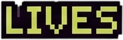
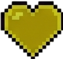
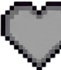
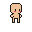
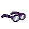
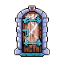
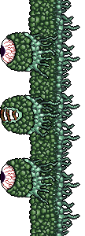

Gafas activables
Revelan plataformas, aclaran la vision, dan buffs de movilidad y cambian la lectura del mundo.
Pinneapple Engine presenta
Un juego pixel art en Godot sobre avanzar entre sombras, bullying y claridad. Las gafas no son una debilidad: son la mecanica central para revelar caminos.





Idea principal
Deep Shadow toma el bullying como conflicto narrativo y lo convierte en gameplay: miedo, persecucion, rutas ocultas, pensamientos internos y puzzles que solo se entienden cuando el jugador activa las gafas.
Revelan plataformas, aclaran la vision, dan buffs de movilidad y cambian la lectura del mundo.
Los pensamientos aparecen como burbujas cercanas al personaje para reforzar el tono psicologico.
Puertas, checkpoints, puzzles, jefe slime y persecucion final forman una ruta completa.
Resultados logrados
Exploracion, llave, puerta, puzzle de gafas, parkour oculto y jefe por fases con totems.
Persecucion con muro verde, camara dinamica, checkpoints, puzzle de nodos y cierre final.
Vigneta, distorsion, HUD pixelado, particulas, sonidos, pensamientos y transiciones narrativas.
Programacion Orientada a Objetos
La logica se divide en controladores de mundo, entidades, sistemas de apoyo, vistas y jerarquias reutilizables. Esto deja claro el uso de herencia, composicion, encapsulamiento y señales.
EstadoJugadorBase define comportamientos como normal, sprint, aturdido y bloqueado.
Jugador emite señales para vida, estamina, sprint y gafas; HUD reacciona.
ListaSimple usa nodos enlazados para renderizar creditos sin depender de arrays.
SistemaGuardado maneja 3 slots con ConfigFile y restaura progreso.
Ruta del jugador


El jugador explora, activa las gafas, revela plataformas y derrota al jefe sin atacar directamente.


Un muro gigante representa insultos y presion. Si alcanza al jugador, la carrera reinicia.
Hoja de ruta completada
Movimiento, salto, stamina, HUD y puertas.
Gafas, puzzles, checkpoints, guardado y menu.
Jefe slime, mundo 2, persecucion y final.
Pixel art, sonidos, vigneta, pensamientos y cinematicas.